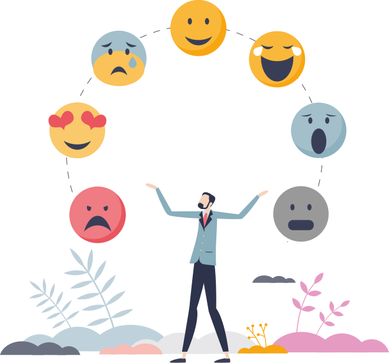

Эмоциональное выгорание- что это такое и как с ним справиться. Стадии и симптомы, методы восстановленияКак справиться со страхом и как управлять своими страхами
Как управлять своими эмоциями: 5 советовНужно ли сдерживать негативные эмоции?Грусть, печаль, тоска: как избавиться от этих занос?